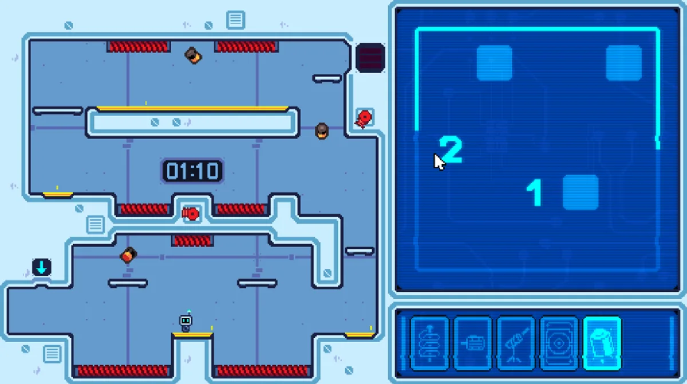

ggLab · A-1455
Hra, která spojí dva pohledy
Factory Reset ukazuje asymetrický multiplayer: dva hráči, dva pohledy a nutnost vzájemné domluvy. Původní program laboratoře grafiky a herního designu zahrnoval studentské hry i interaktivní hrací stěnu.
Hry pro více hráčů
- Factory Reset ↗ — asymetrický multiplayer
- Spory ↗ — lokální souboj pro dva
- Shroombellion: Mushrooms against humanity ↗ — split-screen pro dva
- Spirate ↗ — kooperace pro dva, lokálně i přes Steam
- Harmonopolis ↗ — fyzická hra, režim pro více hráčů